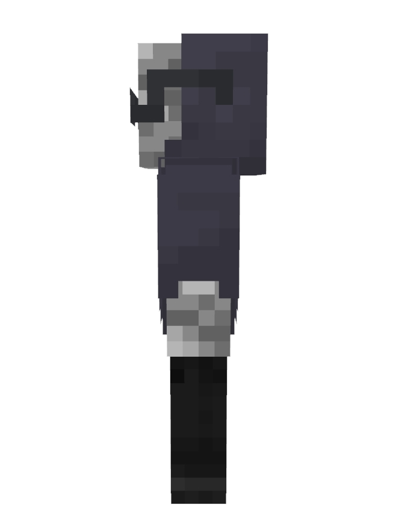
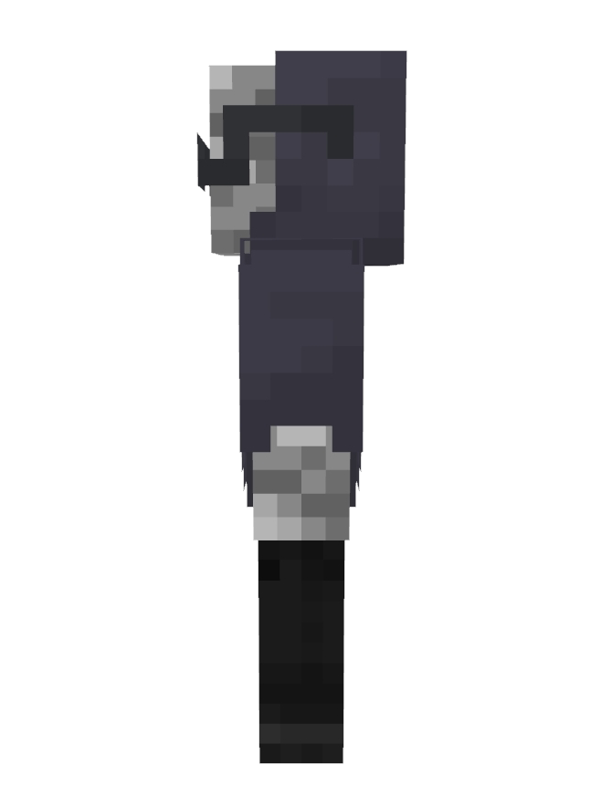

Hello there !
It's Me, InfiniteCodeX
" I'am a Minecraft Bedrock player that are very likes to do mining, exploring caves, farming and even slaying mobs. However, i hate building so much, it's because I'am very bad at design and creativity. "
" I'am a Minecraft Bedrock player that are very likes to do mining, exploring caves, farming and even slaying mobs. However, i hate building so much, it's because I'am very bad at design and creativity. "
I'am a very chill Minecraft Bedrock player, so that i did'nt get angry easily even if i got trolled with my own friends. Also, everytime they are needed on something, I'm gladly helping them as quickly as i can especially if they are needed some materials or items.
On weekdays, I spent 2 hours each day by playing Minecraft. While on the weekends, I always spent around 4-5 hours each day. I like to play this game on Survival Mode, it's because there are so many challenges on this mode and that makes me possible to playing this game much longer, especially when i playing on this mode with my friends.
 

This is my own minecraft skin that i used on any servers, worlds, and realms.
Feel free to use it :D.

The only reason I like sugar cane it's because this item is very helpful. This item is also the main source of getting an enchanted book quickly on Minecraft.

I could find up to 5 diamonds and creates a Nether Portal in around 3 in-game days or 60 minutes.

I could get a full set of iron gears in just one day.

I could enchant and make up to 3 level-3 enchanted books or items each day.

Right after i had build my own animal farms on Minecraft. I could get at least 4 stacks of different food on each day.

I'am very likes to do farming, so that i could make a simple farm starter and then enlarges it on each day.

I could make almost any automatic farm using redstones and then finishes it quickly.

I could swept away any large forests in just a few minutes.

I'm very addicted to mining, so that I could mine longer on underground and exposes more valuable ores underneath.
I almost known everything about Minecraft, from it's blocks, items, and even their mobs behavior.

Minecraft commands and command blocks are the main reasons that i like this game. So that, I'am very great at making a simple projects by using Command Blocks in Minecraft.
I'am very chill at anything, especially when playing Minecraft, it's because I'am playing this game just for fun :)